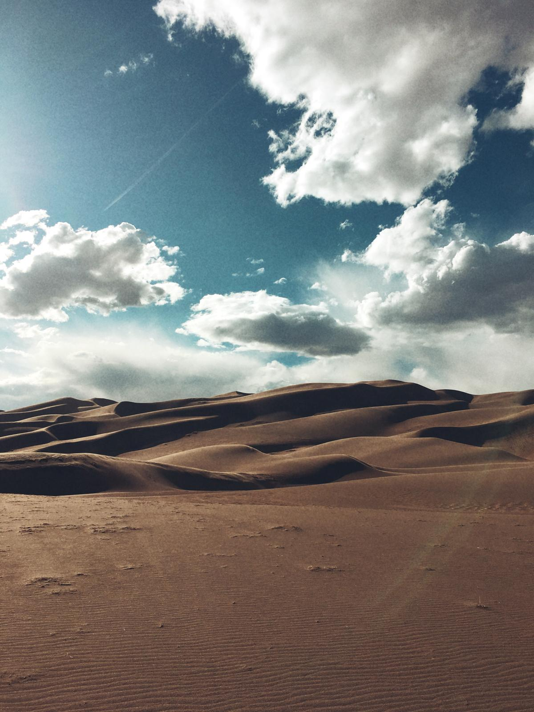
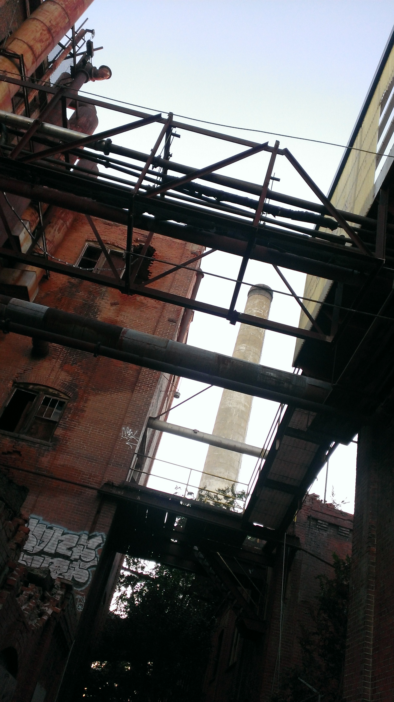
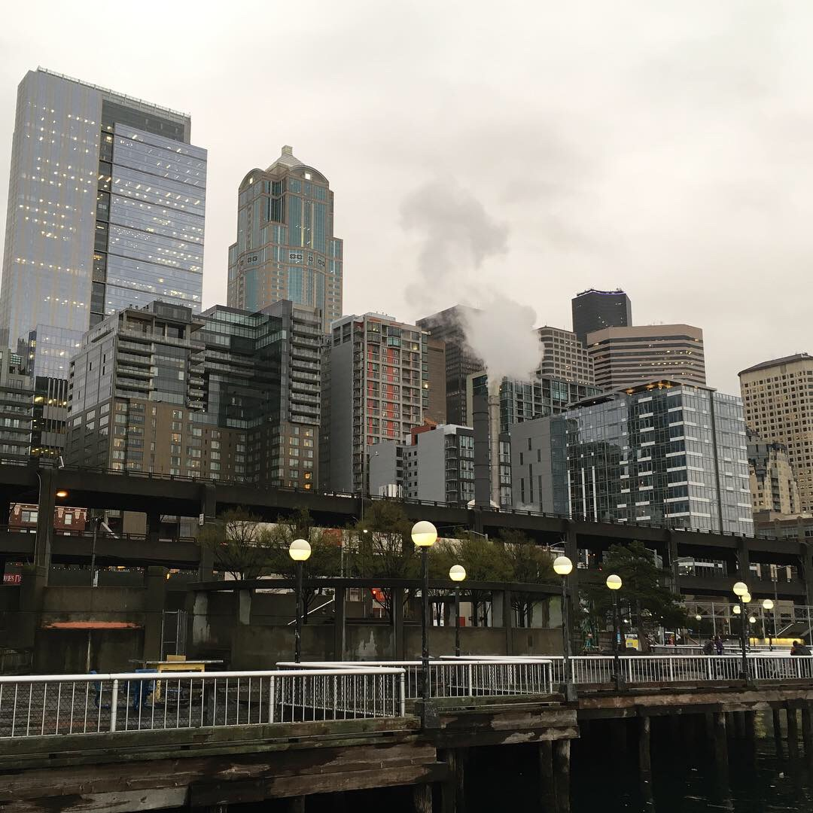
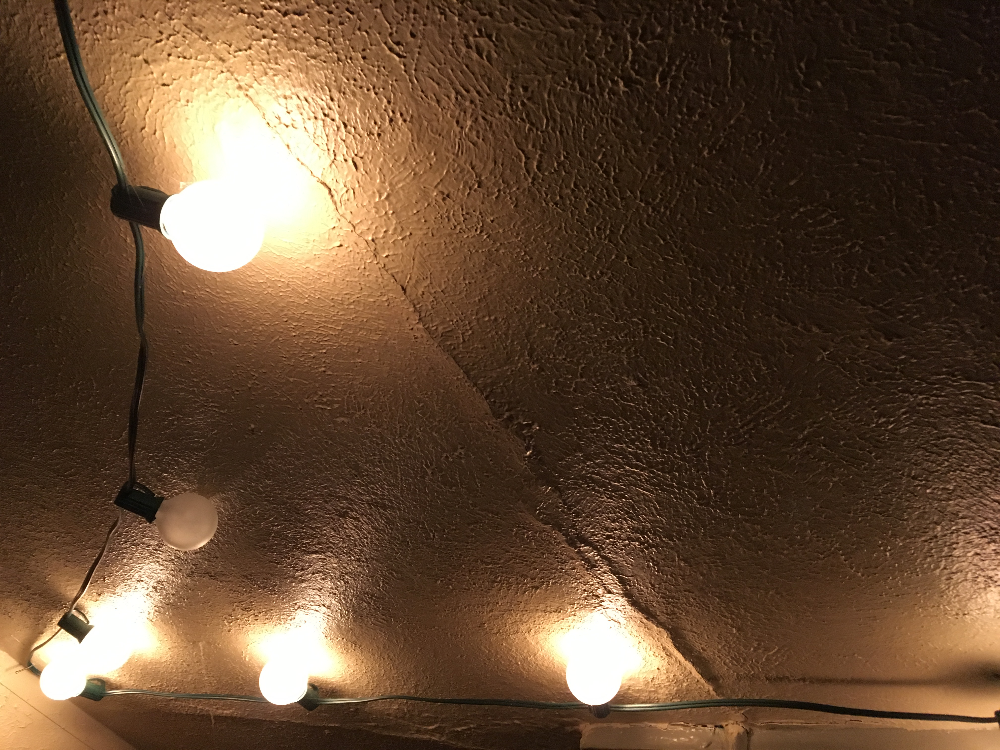

Photography

The Dunes
A sweeping current of sand from the Great Sand Dunes in Colorado.

Dunes, Darker
A storm encroaching on the Great Sand Dunes in Colorado.
View From the Bottom
A rather imposing view staring up at the interior of a Denver hotel.

Reclaimed Factory
Sometimes abandoned factories can be rather pretty once they've been reclaimed by nature.

Seattle
I miss the rain.

Strings of Light
There's not much to this one. Just a bright series of lights against a wall that especially captured my eye.